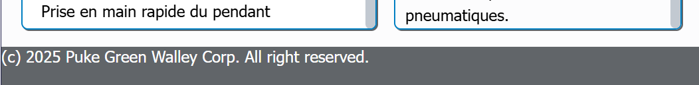

This example demonstrates how to append a footer to a page. Page footers will contain a copyright message.
yourLayout/publish/pages/regular-page.xsl. Specifically, append a footer at the bottom of the page. <!-- /Konsole keeper -->
<footer>(c) 2025 Puke Green Walley Corp. All rights reserved.</footer>
</div>
<!-- /Shell -->
</body>
yourLayout/front/css/helpui.css./* Footer */
:root {
--footer_height: 30pt;
}
/* Consoles */
:root {
--console_width: 100vw;
--console_height: calc(100vh
- var(--page_header_height)
- var(--minimal_indent)
- var(--footer_height));
}
footer {
height: var(--footer_height);
background: var(--gray700);
color: #ffffff;
}
A footer appears at the bottom of each page.
